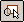

Measure an area
-
Choose Inspect tab→2D Measure group→Measure Area

. -
Click inside a closed boundary to measure its area.
-
To measure the total area in more than one boundary, press the Shift key and click inside the next boundary.
Tip:-
If you are measuring multiple areas and want to clear the total measurement, click anywhere without pressing the Shift key.
-
In Draft, when measuring within or to a drawing view, you can choose to display the value using the model distance or a user-defined distance by selecting a scale option on the Measure Area command bar.
-
How do I
Measure a distanceMeasure a length or a sum of lengths
Measure elements automatically
Look up more details
Smart Measure commandSmart Measure command bar
Measure Distance command
Measure Distance command bar
Measure Area command
Measure Area command bar
Measure Total Length command
Measure Total Length command bar